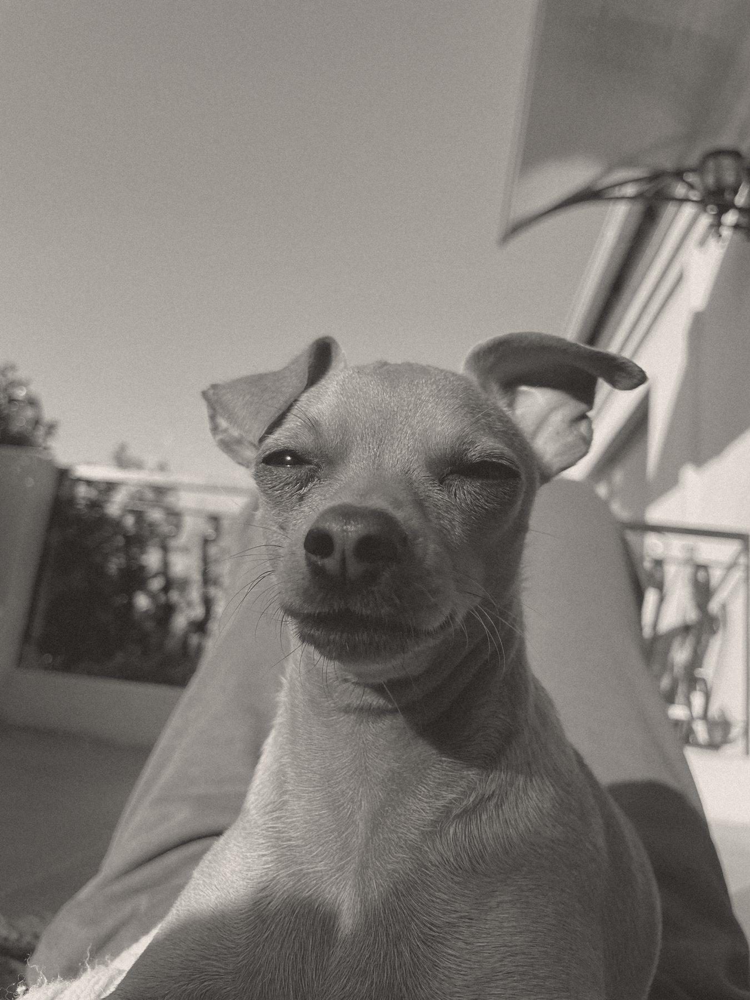

ThingsIlove

- 01Piano
- 02Running
- 03Strength training
- 04Yoga
- 05Crafts
- 06Photography
- 07Building random things with AI
- 08Creating AI portraits of my friends
- 09Practicing mindfulness
- 10My family, friends, and dogs
- 11Learning new things
- 12Spending time outdoors
- 13Hiking
- 14Floating in calm bodies of water
- 15Architecture & interior design
- 16Fashion
- 17Rock climbing
- 18Pranks
- 19Crossword puzzles
- 20Board games (especially trivia ones)
- 21Baking
- 22History
- 23Water parks
- 24Being described
- 25Handwritten cards/notes
- 26Interpretive dance (watching, not doing)
- 27Tuvan throat singing
- 28Karaoke
- 29Blind karaoke
- 30Anything vintage